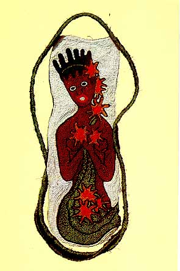

Ochún

Orisha mayor. Dueña del amor, de la feminidad y del río. Es el símbolo de la coquetería, la gracia y la sexualidad femenina. Mujer de Changó e íntima amiga de Eleggúa, que la protege. Siempre acompaña a Yemayá. Vive en el río y asiste a las gestantes y parturientas. Mulata bella, simpática, bailadora, fiestera y eternamente alegre. Es capaz de resolver tanto como de provocar riñas entre los orishas y los hombres.